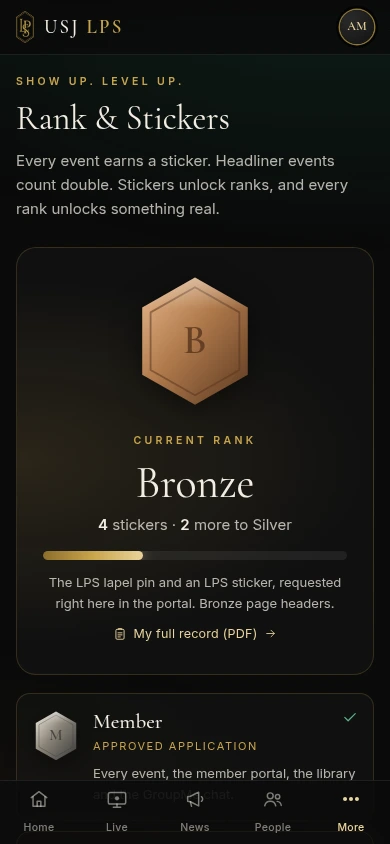
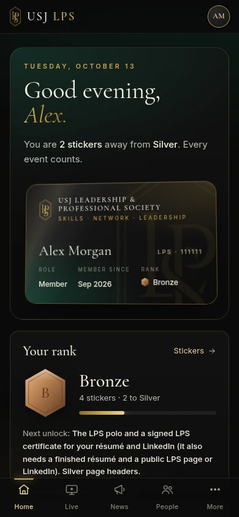

Headliner Series
Leaders from well-known organizations share how they got there. Talk, Q&A and a meet-and-greet.
Classes build a profession. We build the person — the one who speaks with confidence, decides under pressure and walks into any room ready to lead.
A campus-wide society for undergraduates of every major. We bring leaders into the room, turn real decisions into simulations and give every member a path from first event to real leadership.
Everything we do is built around three things every career needs. Learn to lead by learning from leaders.
Simulations, labs and workshops that turn knowledge into instinct, on your phone or laptop.
Leaders, founders and professionals in the room with you, not on a screen. Real conversations, real follow-ups.
Lead a team, host an event, earn your rank. Every member has a path to real responsibility.
Every program is created with students, staff and faculty, and shaped by what we learn from our guests. 01 / 08
Leaders from well-known organizations share how they got there. Talk, Q&A and a meet-and-greet.
Real decisions, real pressure, no real risk. Built with students, staff and faculty, and never the same twice.
Try a career before you choose it. Short missions from sports, media, health, finance and tech.
Sit at the table, read the numbers and vote. Every choice changes what happens next.
Find your leadership style, pick one skill to grow and see your progress by the end of the semester.
Mock interviews with honest feedback, so the real one feels familiar.
Professional headshots by invited photographers and a LinkedIn profile built with you, step by step.
An evening to meet members, guests and alumni. Dress up, practice the room, make the connection.
Talk · Q&A · Meet-and-greet
Leaders learn
from leaders.
We invite the guests ourselves: executives, founders, coaches and public figures with a story worth hearing. Members get the talk, the questions and the handshake.
Members research every guest and come with real questions.
Meet-and-greets with limited spots, reserved online.
Headliners count twice toward your rank.
Every guest leaves "My path in 5 steps" for the next generation.
Every event earns a sticker in your portal. Stickers unlock ranks, and every rank unlocks something real.
Every event, the member portal, the library and the GroupMe chat.
The LPS lapel pin and an LPS sticker, requested right in the app.
The LPS polo and a signed, verifiable Certificate of Achievement for your résumé.
Certificate with Distinction, priority seats and meet-and-greets with headline guests.
Highest Distinction, company trips, an e-board reference and the chance to co-host.
A Certificate of Achievement signed by the President and Advisor, with a Credential ID and public verification link. Download it as a PDF and add it to LinkedIn.
Recognizing commitment to
skills, network and leadership.
Every presentation and simulation, saved. Vote, answer and play along in real time.
Résumé Builder, your public LPS page, personal notes and a PDF participation record.
Track your stickers, request merch and download your signed, verifiable certificate.
Propose events, respond to polls, apply for leadership, join GroupMe and add the portal to your home screen.


Actual portal interface · demonstration account
Confirmed events, directly from the E-Board calendar. Times are shown in Eastern Time. Members reserve their seat online.
Checking the latest published events.
Seven founders lead the Society in its first year. After Year 1, members elect the board every year.
The Society belongs to Career Development, not to any major or academic department. That is why it is open to every student, from nursing to computer science.
Leads the Society
Leads the Major Leads
Records & communication
Budget & SGA funding
Simulations & calendar
Brand & social media
Speakers & companies
Two advisor roles, supporting the Society through the Office of Career Development.
One lead for every major, creating programs for their own field. Joining as the Society grows.
Free to apply. Open to every USJ undergraduate,
every major and every year.
A short form on our website.
Confirm you are a USJ undergraduate.
The e-board reviews and approves.
Your welcome email and portal access.